VIDEO / 01

成功案例PROJECT REFERENCES
把仓库现场
变成可见的结果。Make warehouse results
visible.
资料中收录的 11 个客户案例，覆盖制造、食品、服饰、电缆、物流和自动化仓储。Eleven supplied references across manufacturing, food, apparel, cable, logistics and automated storage.
项目案例Project cases
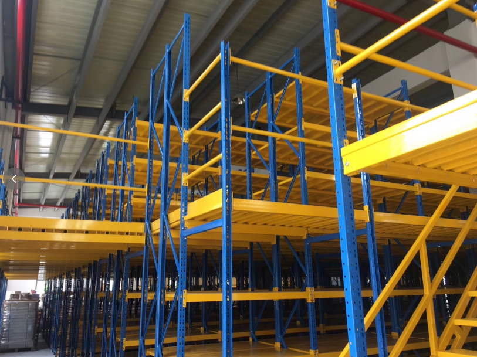
01 / MANUFACTURING
广东巴斯夫BASF Guangdong
钢阁楼Steel mezzanine
↗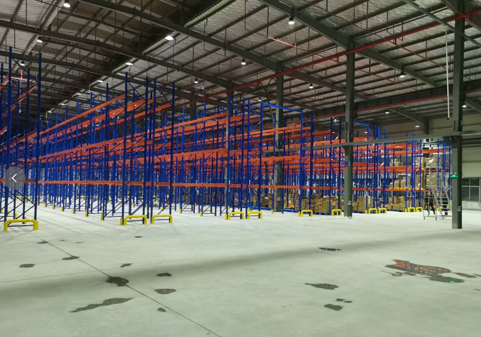
02 / APPAREL
上海森马服饰Semir Apparel Shanghai
重型货架Pallet racking
↗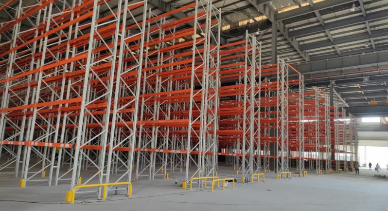
03 / FOOD
太太乐Totole
重型货架Pallet racking
↗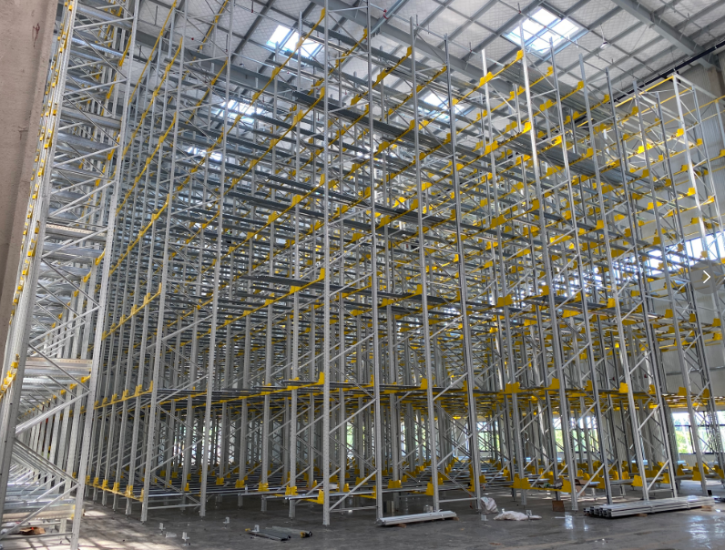
04 / MANUFACTURING
山东英科Shandong Intco
穿梭货架Radio shuttle racking
↗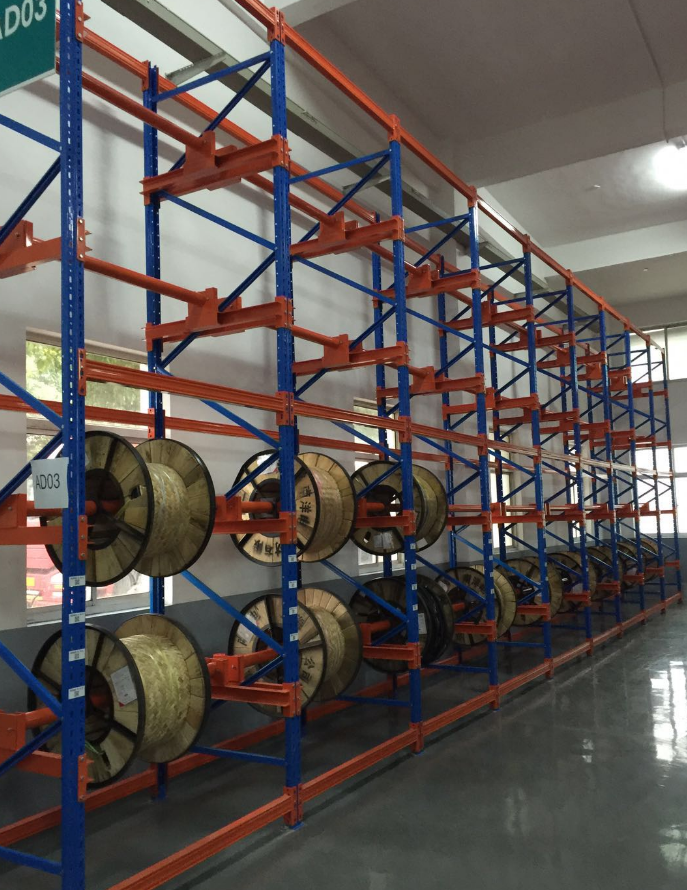
05 / CABLE
东洋电机Toyo Denso
电缆架Cable racking
↗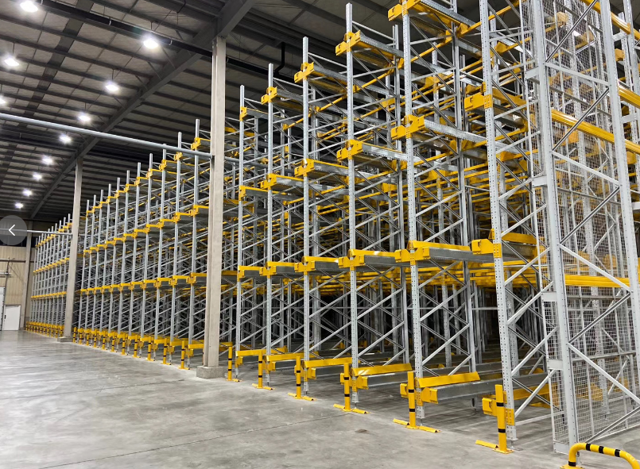
06 / MANUFACTURING
东莞慕斯Dongguan Mousse
穿梭货架Radio shuttle racking
↗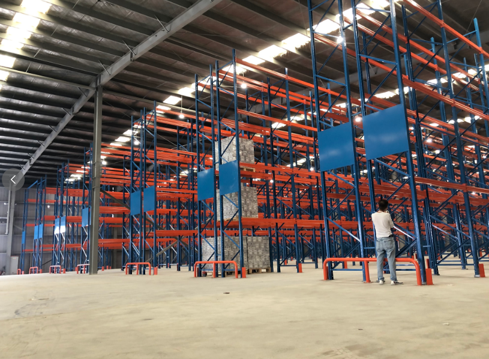
07 / LOGISTICS
上海国储Shanghai Guochu
重型货架Pallet racking
↗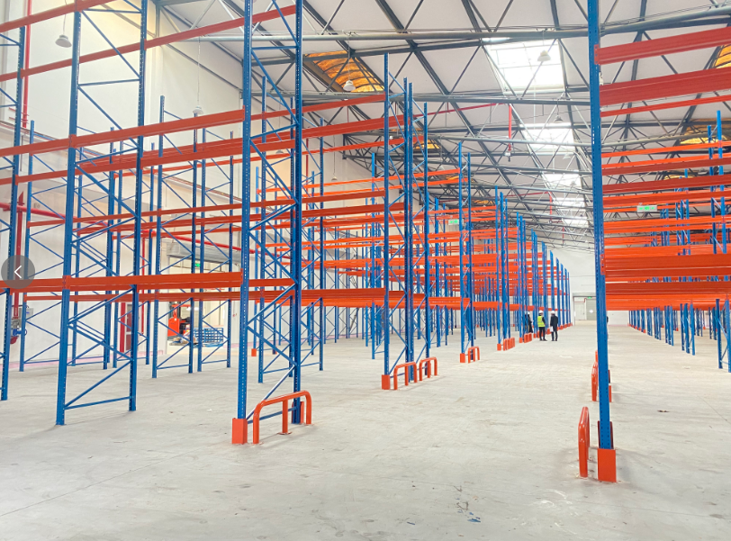
08 / ENGINEERING
中国化建CNCEC
重型货架Pallet racking
↗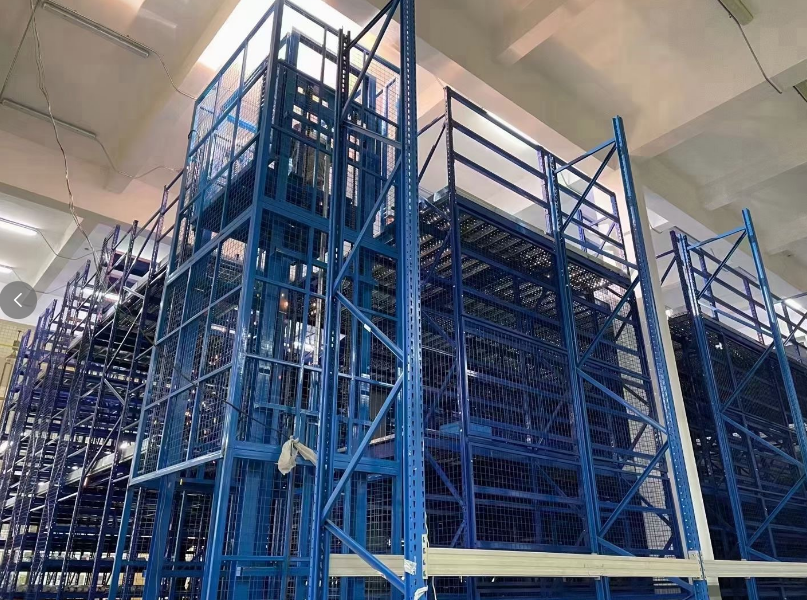
09 / TECHNOLOGY
上海柏楚Shanghai Bochu
钢阁楼Steel mezzanine
↗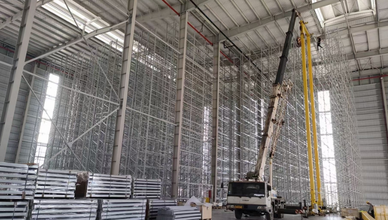
10 / AUTOMATION
上海泽流供应链Shanghai Zeliu Supply Chain
自动化立体库Automated warehouse
↗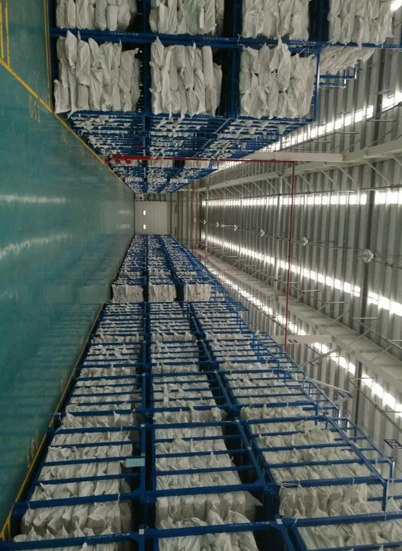
11 / CARBON
东阳碳素Dongyang Carbon
堆垛架Stacking rack
↗案例视频Case videos
展示用户提供的案例视频素材，作为项目沟通与现场参考。User-supplied case videos for project review and on-site reference.
VIDEO / 02
项目案例二Project reference 02
VIDEO / 03
项目案例三Project reference 03
案例效果图Case visuals
补充展示用户提供的案例效果图素材。Additional case visuals supplied by the user.
VIDEO / 01
案例效果图1Case visual 01
VIDEO / 02
案例效果图2Case visual 02
VIDEO / 03
案例效果图3Case visual 03
VIDEO / 04
案例效果图4Case visual 04
VIDEO / 05
案例效果图5Case visual 05
VIDEO / 06
案例效果图6Case visual 06
VIDEO / 07
案例效果图7Case visual 07
VIDEO / 08
案例效果图8Case visual 08
VIDEO / 09
案例效果图9Case visual 09
VIDEO / 10
案例效果图10Case visual 10
VIDEO / 11
案例效果图11Case visual 11
VIDEO / 12
案例效果图12Case visual 12
VIDEO / 13